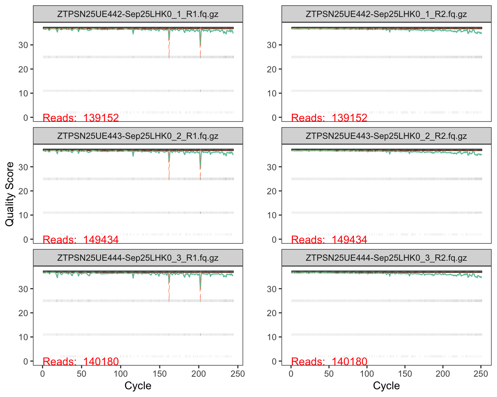
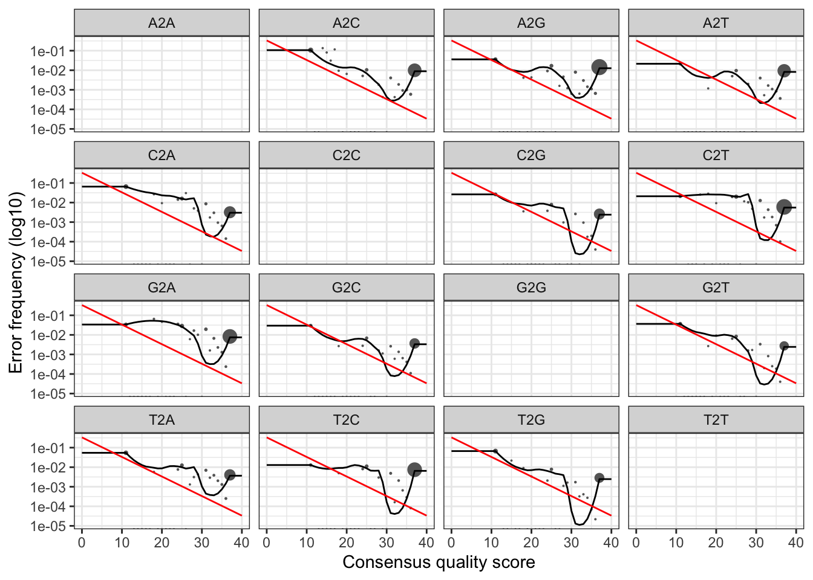
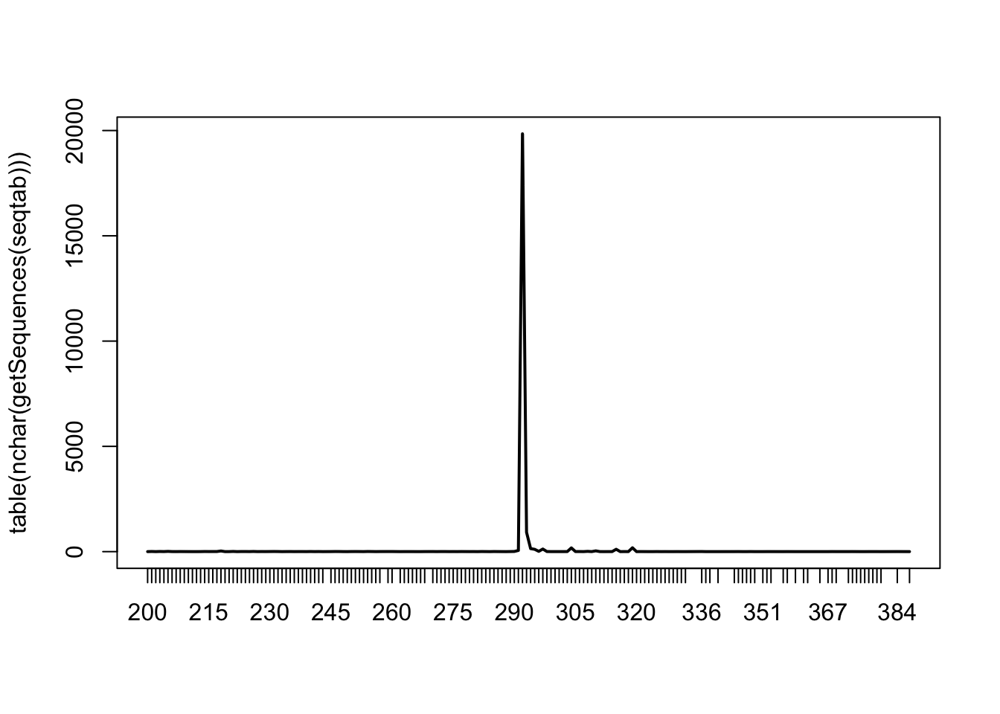

# 检查原始测序数据目录
PATH_SEQENCING_RAW <- "data/amplicon/raw/"
data_exists <- dir.exists(PATH_SEQENCING_RAW) && length(list.files(PATH_SEQENCING_RAW, pattern = "\\.gz$")) > 0
data_exists#> [1] TRUE在开始分析之前，请确保已下载原始测序数据。
以下代码将检查数据文件是否存在：
# 检查原始测序数据目录
PATH_SEQENCING_RAW <- "data/amplicon/raw/"
data_exists <- dir.exists(PATH_SEQENCING_RAW) && length(list.files(PATH_SEQENCING_RAW, pattern = "\\.gz$")) > 0
data_exists#> [1] TRUE如果 data_exists 返回 FALSE，说明数据文件尚未下载。请按以下步骤获取数据：
下载数据文件：
lecture6-amplicon-rawdata.zip解压到项目目录：
unzip data.zip -d /path/to/lecture6-r-microbiome-analysis/验证目录结构：
data/
├── amplicon/
│ └── raw/ # 原始测序 fastq 文件
├── processed/ # 预处理后的数据（该文件随本仓库提供，不在压缩包中）
└── silva/ # 参考数据库采用 DADA2 对公司返回的数据进行分析注释。
library(dada2)
library(ggplot2)
library(cowplot)
library(dplyr)
library(stringr)
library(tibble)这些 fastq 文件是通过 2x250 Illumina Miseq 扩增子对 16S rRNA 基因的 V4 区进行测序生成的，这些样本来自实验。现在，只需将它们视为要处理的配对端 fastq 文件。
# 设置文件所在的路径
PATH_SEQENCING_RAW <- "data/amplicon/raw/"
# 查找并排序 R1 和 R2 文件
fnFs <- sort(list.files(PATH_SEQENCING_RAW, pattern="_R1.f.*q.gz", full.names = TRUE))
fnRs <- sort(list.files(PATH_SEQENCING_RAW, pattern="_R2.f.*q.gz", full.names = TRUE))
c(fnFs, fnRs) |> basename() |> sort()#> [1] "ZTPSN25UE442-Sep25LHK0_1_R1.fq.gz" "ZTPSN25UE442-Sep25LHK0_1_R2.fq.gz"
#> [3] "ZTPSN25UE443-Sep25LHK0_2_R1.fq.gz" "ZTPSN25UE443-Sep25LHK0_2_R2.fq.gz"
#> [5] "ZTPSN25UE444-Sep25LHK0_3_R1.fq.gz" "ZTPSN25UE444-Sep25LHK0_3_R2.fq.gz"
#> [7] "ZTPSN25UE450-Sep25LHK1_1_R1.fq.gz" "ZTPSN25UE450-Sep25LHK1_1_R2.fq.gz"
#> [9] "ZTPSN25UE451-Sep25LHK1_2_R1.fq.gz" "ZTPSN25UE451-Sep25LHK1_2_R2.fq.gz"
#> [11] "ZTPSN25UE452-Sep25LHK1_3_R1.fq.gz" "ZTPSN25UE452-Sep25LHK1_3_R2.fq.gz"文件名包含 Sample ID，这里直接从 sample ID 获取实验处理。
sample.names = fnFs |>
basename() |>
str_extract("Sep25.*_[0-9]") |>
str_remove("^Sep25")
meta = tibble(sample_id = sample.names) |>
tidyr::separate(sample_id, c("treatment", "rep"), sep = "_", remove = FALSE)测序质量的分布是一个重要的指标，通常我们会查看前 3 个样本的测序质量图 1.1。由图可知：
p1 = plotQualityProfile(fnFs[1:3]) +
facet_wrap(~file, ncol=1)
p2 = plotQualityProfile(fnRs[1:3]) +
facet_wrap(~file, ncol=1) +
ylab("")
plot_grid(p1, p2, ncol=2)
测序质量得分在每个位置的分布以灰度热图显示，其中深色对应更高的频率。绘制的线条显示位置统计数据：绿色为平均值，橙色为中位数，虚线橙色为第25和第75百分位数。如果序列长度不同，将绘制一条红线，显示至少延伸到该位置的读数百分比。
# Place filtered files in filtered/ subdirectory
filtFs <- file.path(PATH_SEQENCING_RAW, "filtered", paste0(sample.names, "_F_filt.fq.gz"))
filtRs <- file.path(PATH_SEQENCING_RAW, "filtered", paste0(sample.names, "_R_filt.fq.gz"))
names(filtFs) <- sample.names
names(filtRs) <- sample.namesout <- filterAndTrim(fnFs, filtFs, fnRs, filtRs,
maxN = 0, maxEE = c(2,4), truncQ = 0,
rm.phix = FALSE,
truncLen = c(200,200),
compress = TRUE,
multithread = TRUE)
head(out)#> reads.in reads.out
#> ZTPSN25UE442-Sep25LHK0_1_R1.fq.gz 139152 134592
#> ZTPSN25UE443-Sep25LHK0_2_R1.fq.gz 149434 144540
#> ZTPSN25UE444-Sep25LHK0_3_R1.fq.gz 140180 134535
#> ZTPSN25UE450-Sep25LHK1_1_R1.fq.gz 128633 124752
#> ZTPSN25UE451-Sep25LHK1_2_R1.fq.gz 133500 128168
#> ZTPSN25UE452-Sep25LHK1_3_R1.fq.gz 143316 137417在 DADA2 中，learnErrors 是整个流程的关键步骤之一，其目的是学习测序错误模型，这是 DADA2 高精度去噪能力的基础。
高通量测序（如 Illumina）在读取 DNA 序列时会出现错误，比如碱基错配（substitution）。DADA2 的目标是区分这些测序错误与真实的生物变异（例如不同的细菌或物种）。
为了做到这一点，DADA2 需要知道测序错误是如何分布的，例如：
learnErrors(filtFs) 会根据过滤后的序列数据（如 filtFs）统计这些碱基替换的发生频率，结合质量分数，拟合出一个错误率矩阵（error rate matrix），这个矩阵是后续 序列去噪（denoising） 的基础。
只有有了这个模型，DADA2 才能：
对同一台机器、同一批次的样本，可以用一个共享的错误模型。如果你有很多样本，也可以选择只在一部分样本中学习错误，再应用到其他样本中。
# 学习正向和反向的错误模型
errF <- learnErrors(filtFs, multithread = TRUE)#> 107683800 total bases in 538419 reads from 4 samples will be used for learning the error rates.errR <- learnErrors(filtRs, multithread = TRUE)#> 107683800 total bases in 538419 reads from 4 samples will be used for learning the error rates.plotErrors(errF, nominalQ = TRUE)plotErrors(errR, nominalQ = TRUE)
# 去除重复序列
# 仅仅保留重复序列中的一条序列，以在后续序列处理中节省计算资源
derepFs <- derepFastq(filtFs)
derepRs <- derepFastq(filtRs)dadaFs <- dada(filtFs, err=errF, multithread = TRUE, verbose = FALSE)
dadaRs <- dada(filtRs, err=errR, multithread = TRUE, verbose = FALSE)dadaFs[[1]]#> dada-class: object describing DADA2 denoising results
#> 1838 sequence variants were inferred from 45002 input unique sequences.
#> Key parameters: OMEGA_A = 1e-40, OMEGA_C = 1e-40, BAND_SIZE = 16mergers2 <- mergePairs(dadaFs, derepFs, dadaRs, derepRs)下面，查看合并后的结果。
$abundance：对应这个正向/反向序列组合的读数数量。$sequence：合并后的序列。$forward：正向去噪序列的索引。$reverse：反向去噪序列的索引。$nmatch：重叠区域中匹配的核苷酸数量。$nmismatch：重叠区域中不匹配的核苷酸数量。$nindel：重叠区域中的插入/缺失数量。$prefer：用于重叠区域的序列来源。1=正向；2=反向。$accept：如果正向和反向去噪序列之间的重叠至少为minOverlap且最多有maxMismatch差异，则为TRUE。否则为FALSE。# 查看合并后的序列
head(mergers2[[1]]) |> as_tibble()#> # A tibble: 6 × 9
#> sequence abundance forward reverse nmatch nmismatch nindel prefer accept
#> <chr> <int> <int> <int> <int> <int> <int> <dbl> <lgl>
#> 1 GTGTCAGCCGCCG… 159 252 434 108 0 0 1 TRUE
#> 2 GTGTCAGCAGCCG… 142 1 1 108 0 0 1 TRUE
#> 3 GTGTCAGCAGCCG… 125 469 1046 108 0 0 1 TRUE
#> 4 GTGTCAGCCGCCG… 121 2 1 108 0 0 1 TRUE
#> 5 GTGCCAGCAGCCG… 113 3 1 108 0 0 1 TRUE
#> 6 GTGCCAGCCGCCG… 108 4 1 108 0 0 1 TRUE# 生成 ASV 表
seqtab <- makeSequenceTable(mergers2)
dim(seqtab)#> [1] 6 22183515F 和 806R 理论上扩增区域 约 253 bp（不含引物序列）或者 293 bp（含引物序列）。
使用 515F–806R 进行 16S V4 区扩增，拼接后得到的序列是完全正常、符合设计预期的图 1.4。
# 查看序列长度分布
table(nchar(getSequences(seqtab))) |> plot(type = 'l') 
# 筛选目标长度的序列
seqtab2 <- seqtab[, nchar(getSequences(seqtab)) %in% 290:295]
# 检查筛选后的维度
dim(seqtab2)#> [1] 6 21083# 去除嵌合体
seqtab.nochim <- removeBimeraDenovo(seqtab2, method="pooled", multithread=F, verbose=TRUE)
# 统计去除嵌合体后的 ASV 数量
dim(seqtab.nochim)#> [1] 6 7125# 统计去除嵌合体前后的 ASV 数量占比
sum(seqtab.nochim)/sum(seqtab)#> [1] 0.5474293# 求和函数
getN <- function(x) sum(getUniques(x))
# 合并各样本分步数据量
track <- cbind(out, sapply(dadaFs, getN), sapply(dadaRs, getN), sapply(mergers2, getN), rowSums(seqtab.nochim))
# If processing a single sample, remove the sapply calls: e.g. replace sapply(dadaFs, getN) with getN(dadaFs)
# 修改列名
colnames(track) <- c("input", "filtered", "denoisedF", "denoisedR", "merged", "nonchim")
# 行名修改为样本名
rownames(track) <- sample.names
# 统计结果预览
head(track)#> input filtered denoisedF denoisedR merged nonchim
#> LHK0_1 139152 134592 129009 126126 97182 54164
#> LHK0_2 149434 144540 137150 133207 98621 66147
#> LHK0_3 140180 134535 129277 126297 100141 54221
#> LHK1_1 128633 124752 121857 120977 108376 56047
#> LHK1_2 133500 128168 124265 121607 100480 51746
#> LHK1_3 143316 137417 132756 131321 107880 53074SILVA_DB_FILE = "data/silva/silva_nr99_v138.2_wSpecies_train_set.fa.gz"
# 分配到属级别
taxa <- assignTaxonomy(seqtab.nochim, SILVA_DB_FILE, multithread = TRUE, minBoot = 60)# 打印结果
taxa |> as_tibble()#> # A tibble: 7,125 × 7
#> Kingdom Phylum Class Order Family Genus Species
#> <chr> <chr> <chr> <chr> <chr> <chr> <chr>
#> 1 Bacteria Gemmatimonadota Gemmatimonadia Gemmatimonadales Gemma… <NA> <NA>
#> 2 Bacteria Gemmatimonadota Gemmatimonadia Gemmatimonadales Gemma… <NA> <NA>
#> 3 Bacteria Gemmatimonadota Gemmatimonadia Gemmatimonadales Gemma… <NA> <NA>
#> 4 Bacteria Gemmatimonadota Gemmatimonadia Gemmatimonadales Gemma… <NA> <NA>
#> 5 Bacteria Gemmatimonadota Gemmatimonadia Gemmatimonadales Gemma… <NA> <NA>
#> 6 Bacteria Gemmatimonadota Gemmatimonadia Gemmatimonadales Gemma… <NA> <NA>
#> 7 Bacteria Gemmatimonadota Gemmatimonadia Gemmatimonadales Gemma… <NA> <NA>
#> 8 Bacteria Gemmatimonadota Gemmatimonadia Gemmatimonadales Gemma… <NA> <NA>
#> 9 Bacteria Gemmatimonadota Gemmatimonadia Gemmatimonadales Gemma… <NA> <NA>
#> 10 Bacteria Gemmatimonadota Gemmatimonadia Gemmatimonadales Gemma… <NA> <NA>
#> # ℹ 7,115 more rows将 ASV 序列保存为 FASTA 格式，以便后续使用。
asv_sequence <- getSequences(seqtab.nochim)为序列指定唯一 ID。
library(digest)
get_dna_id = function(seq, length = 12){
hash = digest(seq, algo = "sha256", serialize = FALSE)
substr(hash, 1, length)
}# 生成 ASV ID
asv_id = paste0("ASV", sapply(asv_sequence, get_dna_id))
# 将数据框转换为 FASTA 格式
asv_fasta = paste0(">", asv_id, "\n", asv_sequence)# 保存为 FASTA 文件
writeLines(asv_fasta, "data/amplicon/sep25-asv.fasta")将 seqtab.nochim 和 taxa 保存为 CSV 文件，便于后续分析和共享。
# ASV表格导出
# 这里的 seqtab.nochim 是一个数值矩阵，行名是样本名称，列名是 ASV 序列
colnames(seqtab.nochim) <- asv_id
write.csv(seqtab.nochim, "data/amplicon/sep25-asvtab.csv")
# 分类表格导出
# 这里的 taxa 是一个文本矩阵，行名是 ASV 序列，列名是分类学层级
rownames(taxa) <- asv_id
write.csv(taxa, "data/amplicon/sep25-taxtab.csv")